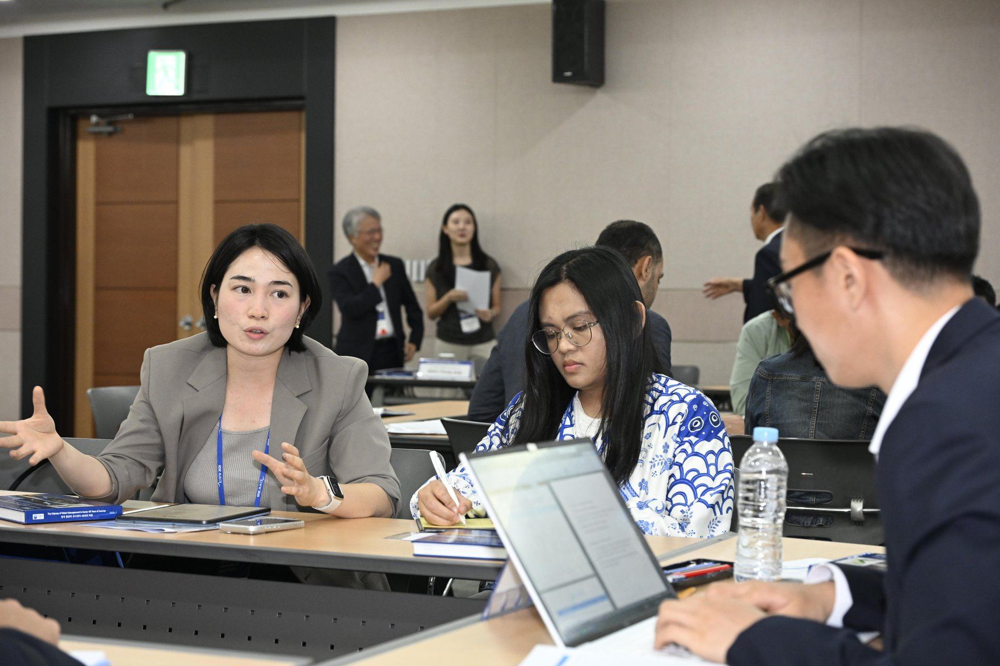
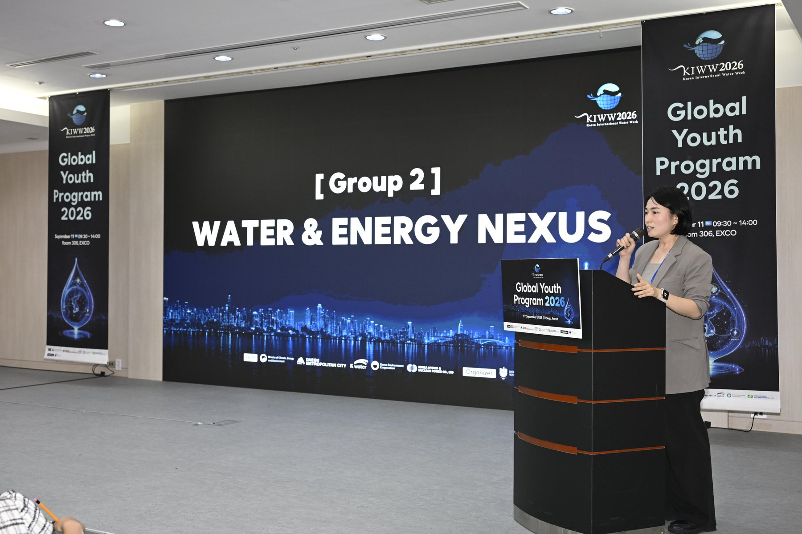
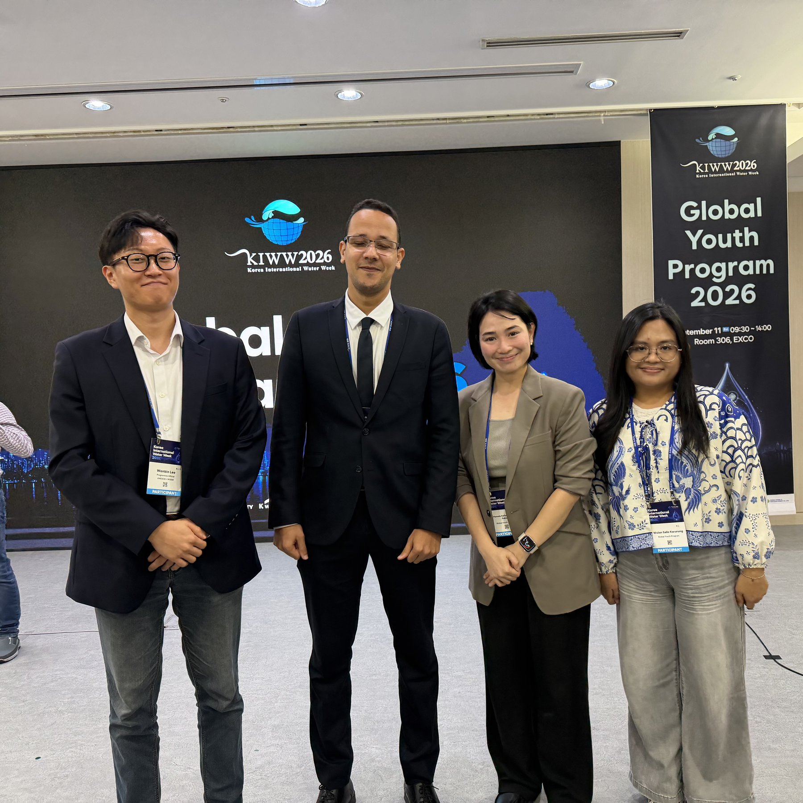
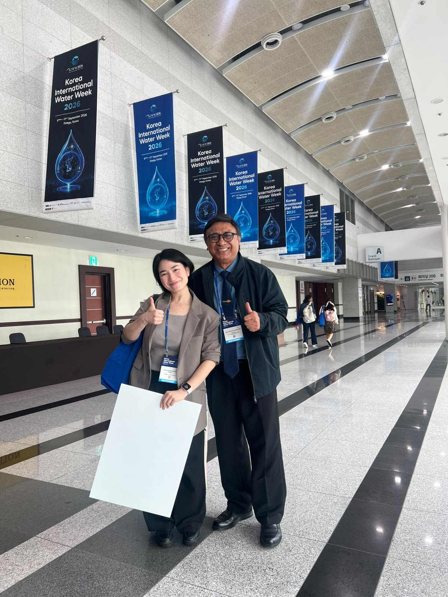
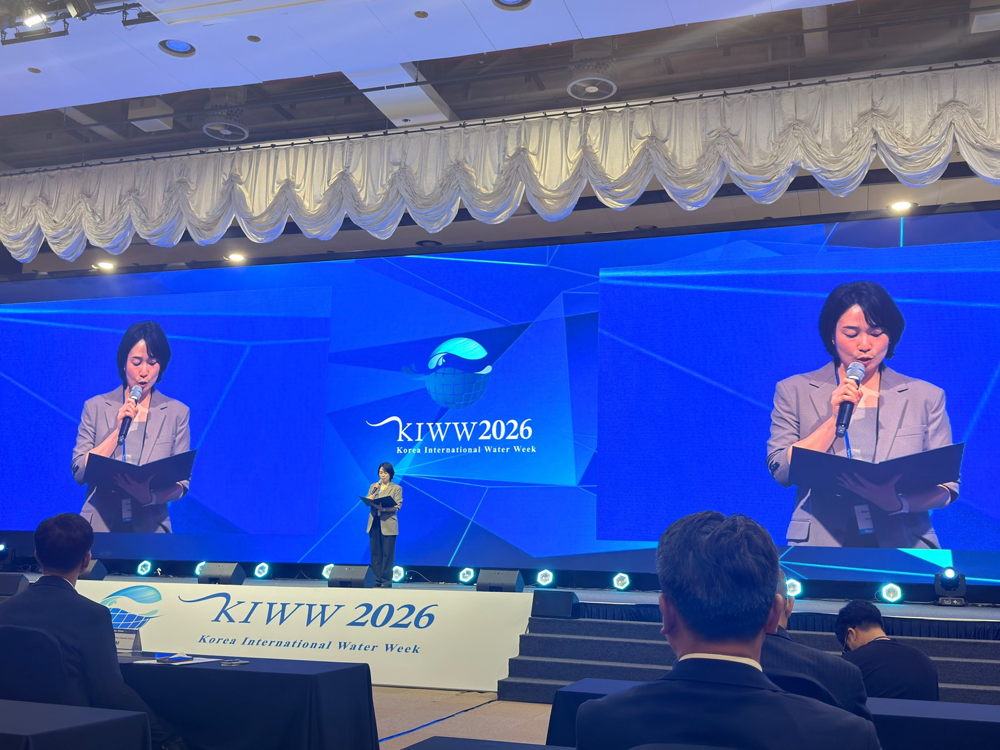

Korea International Water Week 2026
September 12, 2026
Korea International Water Week 2026: Global Youth Program
“Water, Energy, AI: Securing Our Future”
September 11, 2026; EXCO, Daegu, Korea
Yesterday, I joined the Global Youth Program at Korea International Water Week, alongside young people from different countries, disciplines and careers. We worked through five themes shaping our shared water future: climate action, the water–energy nexus, AI and water management, water diplomacy, and SDG 6 and development cooperation.


In the Water–Energy Nexus group with Moustafa (Egypt), Wulan (Indonesia), and our facilitator Wonbin (Korea). I brought a pressing issue from the Philippines- the proposed Pax Silica hub. Pax Silica is a US-led initiative of more than 20 countries to secure AI and semiconductor supply chains, and the Philippines has agreed to host an industrial hub in New Clark City, Tarlac. The plan has drawn controversy because semiconductor and AI manufacturing need enormous amounts of high-quality water and power at the same time, with estimates of up to 3 GW, roughly 16% of Luzon’s grid, in a country where communities already face shortages of both.
We proposed water–energy nexus indicators to compare how efficiently new infrastructure, cities and countries use these resources. We also called for integrated water–energy frameworks that weigh the trade-offs of industrial development, from AI to desalination to renewable energy. Our recommendations became part of the Global Youth Declaration, presented at the KIWW closing ceremony.



I’m deeply honoured to have received an award, and grateful for the chance to represent and share our declaration. I also met wonderful people from the other groups: Bright, Lorraine, Asri, Sir Dharma Putra, and many more. Truly a core memory.
Photos: KIWW 2026 photographers